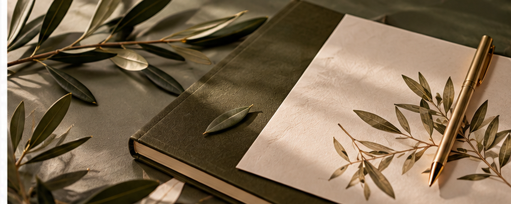
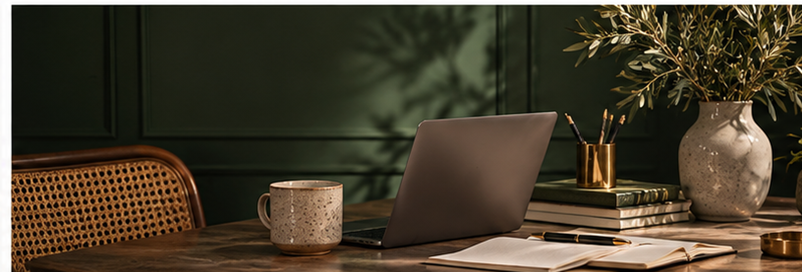
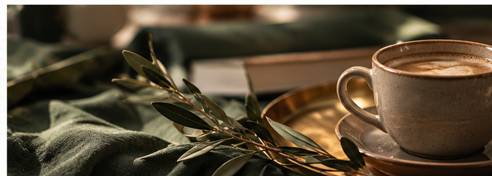

01 / БРИФ
Материалы от заказчика
Уточняю задачу, цели и собираю исходные данные.
Создаю контент с помощью ИИ.
Редактирую и довожу вручную.
Использую нейросети для скорости и идей.
Отбираю лучшее и проверяю факты.
Дорабатываю стиль и структуру вручную.
Результат — точный, понятный, живой контент.


Понятный процесс — от первого брифа до готового материала. На каждом этапе внимание к задаче и деталям.
Уточняю задачу, цели и собираю исходные данные.
Намечаю варианты и структуру с помощью нейросетей.
Проверяю факты, дорабатываю стиль и усиливаю материал.
Передаю согласованный материал в нужном формате.
Демонстрационные примеры для знакомства с подходом. Их можно заменить реальными работами и кейсами.

Демонстрационный пример до замены реальной работой.

Демонстрационный пример до замены реальной работой.

Демонстрационный пример до замены реальной работой.

Демонстрационный пример до замены реальной работой.
Чтобы начать, пришлите:
Напишите — и я предложу лучшее решение.
